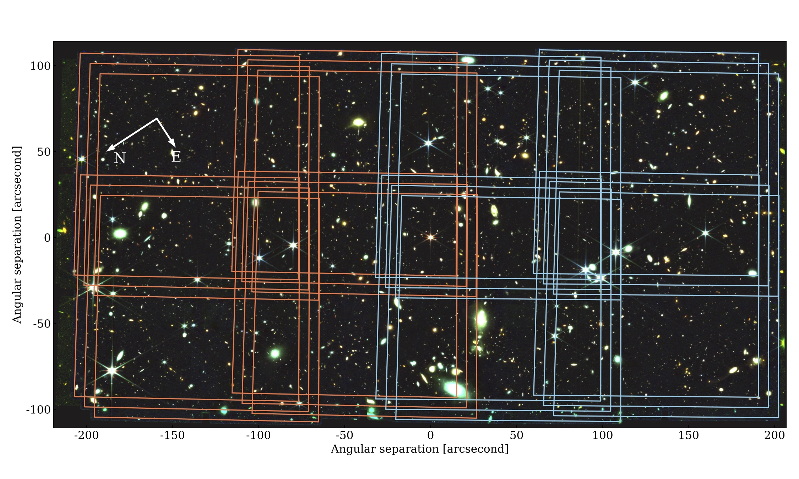
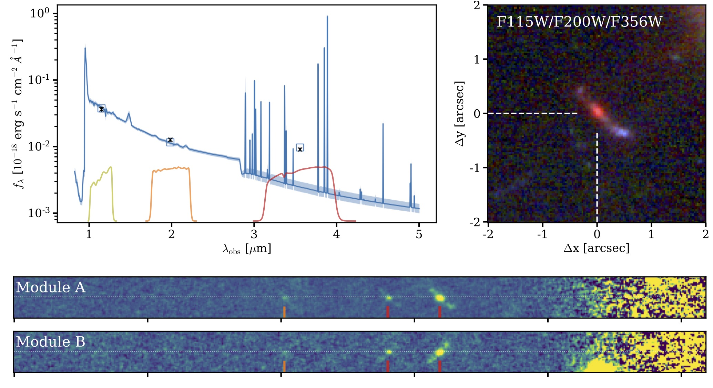

PROJECT DESCRIPTION
Deep wide-field slitless spectroscopy with JWST/NIRCam in the separated fields of six high-redshift quasars
 The EIGER survey is built around a 116 hour JWST program of Guaranteed Time Observation (GTO PID 1243), using deep wide-field slitless spectroscopy (WFSS) and broadband direct imaging observations in the fields distant quasars using the NIRCam instrument. The program is complemented by 100+ hours of ground-based deep high-resolution spectroscopy of all the target quasars and additional data taken by various telescopes. Here we mainly describe the JWST observing program.
Further details of the observations and analysis are provided in the EIGER papers.
Overview
The JWST program consists of identical mosaics of simultaneous NIRCam WFSS and imaging observations in six separated fields, each centered on a bright quasar at 5.98<z<7.08. In these fields, we can learn the physical states of the gas intervening between the quasar and us from deep high-resolution spectroscopy of the quasars. It thus allows to us to correlate the galaxy distributions and their natures (obtained by JWST) with the physical conditions of the intergalactic medium along the sightlines. In the WFSS mode, spectra are obtained for all objects in the field of view, avoinding the need for pre-selection of targets. Thus this ensures that a complete census of galaxies in the field (above a flux limit) is obtained.
We primarily focus on the [OIII]λ4960,5008 doublet lines, redshifted to 3.5μm, from galaxies at z~6, while detecting other lines at lower redshifts. These emission lines are typically very bright in young galaxies at high redshifts, and Thanks to the unprecedented high sensitivity of JWST and the high spectral resolution of NIRCam grism, our strategy allow us to overcome the main difficulties of WFSS in the line identification and the identification of the lines and of the source resposponsible for given emission line.
NIRCam WFSS and imaging
NIRCam WFSS observations are carried out with the F356W (3.1–4.0 µm) filter in the Long Wavelength (LW) channel. They allow isolation of [OIII]λλ5008, 4960 at z=5.3-7.0, the target redshift for the EIGER survey of galaxies at the end of the EoR. A large number of other emission lines at generally lower redshift are also detected in the WFSS observations. Direct (non dispersed) imaging observations are also obtained in the same F356W filter, and two filters in the Short Wavelength (SW) channels. The two SW filters, F115W and F200W, are chosen to effectively characterize the spectral energy distribution of target galaxies at z~6.
Our mosaic pattern of four offset pointings covers the full survey area of 6.5 x 3.4 arcmin2 around each quasar, enabling us to characterize the large-scale galaxy distribution on scales of up to ~10 comoving Mpc around the sightline. The central overlap region of ~40 x 40 arcsec2 (and some other areas) has x4 longer exposure times, enabling us to examine the nature of the quasars, their host galaxies, and their environments, as well as to carry out high-comppleteness searches for galaxies associated with absorption systems in the quasar spectra.
Target quasars
Out six target quasars are listed in the table below. All six have very deep high-resolution spectra over optical to near-infrared from ground-based observations with VLT/X-shooter, Magellan/FIRE, and Keck/HIRES. These quasars were selected to address a range of science goals on the basis ofwhat was known about the properties of the Lyα forest, the exixtence and ionization state of the known metal absorption systems along the line of sight, and the characteristics of the quasars themselves.
| Quasar name | Redshift |
| SDSS J0100+2802 | 6.327 |
| ULAS J0148+0600 | 5.98 |
| SDSS J1030+0524 | 6.280 |
| PSO J159-02 | 6.381 |
| ULAS J1120+0641 | 7.085 |
| SDSS J1148+5251 | 6.475 |
Complementary observations
We would refer the reader to proper published papers and/or preprints for details of complementary observations.
See EIGER Paper III (A-C. Eilers et al.) for the spectroscopy of the quasar J0100+2802.